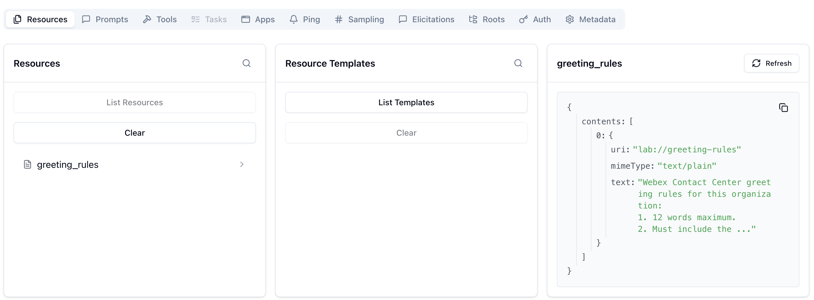
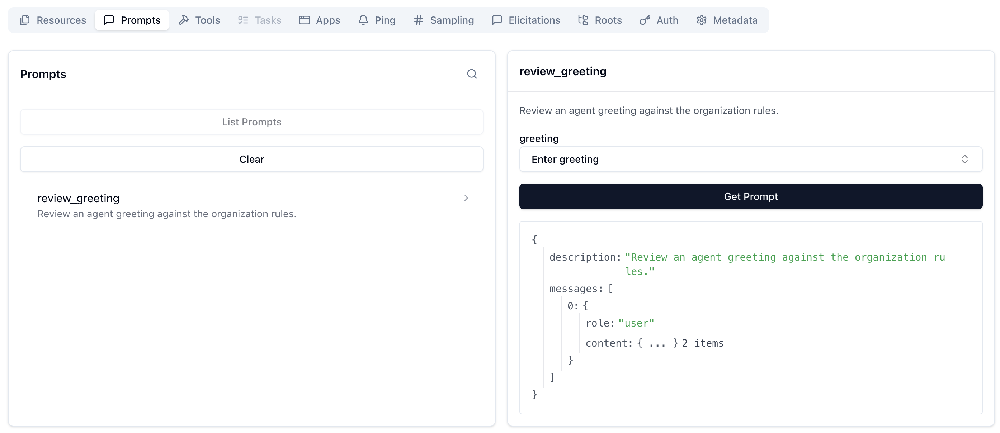
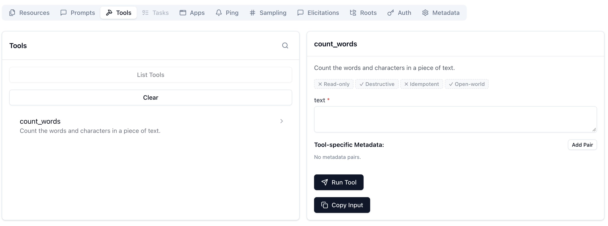
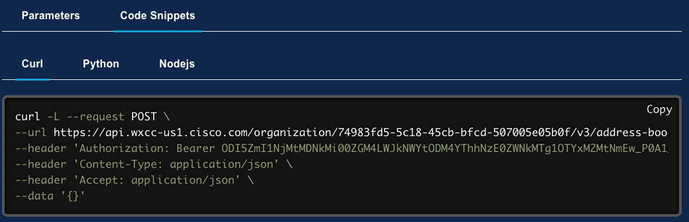

Lab 3 - Build a Custom MCP Server
In this chapter you will build an MCP server that lets an AI assistant manage Webex Contact Center address books.
Step 3.1: Building an MCP Server
Before we write our first line of code, let's talk about how an MCP client (like VS Code) actually talks to an MCP server. The Model Context Protocol supports two primary transport methods: stdio and SSE (Server-Sent Events) over HTTP.
Choosing the Right Transport: stdio vs SSE
| Feature | stdio (Standard Input/Output) |
SSE (Streamable HTTP) |
|---|---|---|
| What is it? | The client spawns the server as a local background process and communicates by reading/writing to its standard input and output streams. | The server runs as a standalone web service. The client connects over the network using HTTP and Server-Sent Events. |
| When to use it? | - Local development and testing. - Tools that run on the same machine as the client (e.g., VS Code connecting to a local script). |
- Production deployments. - When the server needs to be shared across multiple clients or users. - When the server is hosted remotely. |
| Why? | Simplicity: No network configuration, no exposed ports, and the lifecycle is tied to the client (if the client dies, the server dies). | Scalability: You can host the server once in the cloud, update it centrally, and have thousands of bots connect to it via URLs. |
In previous labs, our bot connected to the official Webex MCP servers using SSE (https://mcp.webexapis.com/...).
For this lab, we will build our custom MCP servers using stdio. This is the standard approach for local development and allows us to test our tools instantly using the MCP Inspector and VS Code.
Step 3.1.1: Simple MCP Server
In this section we are going to start wit the simpliest MCP server that does real work: one tool, no network, no token. It takes a messy phone number and returns it in E.164 format.
We will use the official mcp Python SDK to create our server. The SDK makes it incredibly easy to define tools and their execution logic using decorators.
-
Navigate to
03_custom_mcp/01_hello_mcp.pyand review the code.Python Code
# Step 01 - the smallest MCP server: one tool, no network, no token. import logging import re from mcp.server import MCPServer logging.basicConfig(level=logging.INFO, format="%(asctime)s %(levelname)s %(message)s") log = logging.getLogger("hello-mcp") # Create an MCP server instance. mcp = MCPServer("hello-mcp") # Register a tool that cleans a phone number to E.164 format. @mcp.tool() async def format_phone(number: str) -> str: """Clean a phone number to E.164 form, e.g. +14155550101.""" digits = re.sub(r"\D", "", number) if not number.startswith("+") and len(digits) == 10: digits = "1" + digits return "+" + digits # Start the server on stdio and wait for a client to connect. if __name__ == "__main__": log.info("hello-mcp running on stdio - waiting for a client (Ctrl+C to stop).") try: mcp.run() except KeyboardInterrupt: log.info("Stopped.")Everything a
@mcp.tool()decorator does is on display here:- Discovery. The client learns there is a tool called
format_phone. - Description. The docstring becomes the tool's description. This is not documentation for you — it is how the model decides whether this is the right tool to call. A vague or misleading docstring produces a tool the model misuses.
- Schema. The
number: strannotation becomes the input schema, so the client knows to send one string argument.
- Discovery. The client learns there is a tool called
-
In VS Code, make sure your terminal is in the correct folder:
- cd ../03_custom_mcp
-
To test our MCP server we will be using a tool called MCP Inspector. It is the official, interactive debugging tool for MCP servers. It runs a local web interface where you can list tools, resources, and prompts, and execute them directly without needing an LLM in the loop.
- npx @modelcontextprotocol/inspector python 01_hello_mcp.py
Note
If it asks to install the
@modelcontextprotocol/inspectorpackage, pressy:Need to install the following packages: @modelcontextprotocol/inspector@1.0.2 Ok to proceed? (y) -
Once it starts, it should open a new tab for you, if not, it will provide a local URL (usually
http://localhost:6274). Open that URL in your browser. -
Select the following and click
Connect:Transport Type STDIO Command Python Arguments 01_hello_mcp.py -
In the MCP Inspector web interface, click on the Tools tab, then List Tools and you will see the
format_phonetool listed. -
Click on format_phone. In the arguments JSON editor, provide a messy phone number:
{ "number": "(415) 555-0101" } -
Click Run Tool. You should see the result
+14155550101returned immediately.Note
You may need to scroll down
This confirms your server works perfectly in isolation! You can stop the MCP in your terminal with
Ctrl+C, we will still use the MCP inspector in the next exercise.
{kind=link}
{kind=link}
{kind=link}
{kind=link}
Step 3.1.2: Tools, Resources and Prompts
Next, we are going to build a single script that demonstrates the entire MCP architecture, which consists of three distinct primitives:
- A tool is an action the model calls.
- A resource is context the client attaches, like handing the model a rulebook.
- A prompt is the one primitive a human triggers directly — from a slash command or menu.
-
Navigate to
03_custom_mcp/02_hello_resource_prompt.pyand review the code:Python Code
# Step 02 - all three MCP primitives (tool, resource, prompt) without credentials. import logging from mcp.server import MCPServer logging.basicConfig(level=logging.INFO, format="%(asctime)s %(levelname)s %(message)s") log = logging.getLogger("hello-resource-prompt") # Create an MCP server instance. mcp = MCPServer("hello-resource-prompt") # Register a tool that counts words and characters in a piece of text. @mcp.tool() async def count_words(text: str) -> dict: """Count the words and characters in a piece of text.""" words = text.split() return {"words": len(words), "characters": len(text)} # Register a resource with greeting rules the tool cannot know on its own. @mcp.resource("lab://greeting-rules") def greeting_rules() -> str: return ( "Webex Contact Center greeting rules for this organization:\n" "1. 12 words maximum.\n" "2. Must include the agent's first name.\n" "3. Never use 'ASAP' or 'obviously'.\n" ) # Register a prompt that chains the resource and the tool into a review workflow. @mcp.prompt() def review_greeting(greeting: str = "") -> str: """Review an agent greeting against the organization rules.""" return ( f"Review this agent greeting:\n\n" f"{greeting or '<paste a greeting here>'}\n\n" "1. Read the lab://greeting-rules resource for the org rules.\n" "2. Call count_words to measure the greeting.\n" "3. Tell me pass or fail, and why." ) # Start the server on stdio and wait for a client to connect. if __name__ == "__main__": log.info("hello-resource-prompt running on stdio - waiting for a client (Ctrl+C to stop).") try: mcp.run() except KeyboardInterrupt: log.info("Stopped.") -
Go to the MCP Inspector. Click on Disconnect.
- Change Arguments to
02_hello_resource_prompt.pyand click Connect. - Click on Resources and then List Resources. You will see
lab://greeting-rules. You can click it to read the greeting rules. ??? Note "Resources"
- Click on Prompts and then List Prompts. You will see
review_greeting. ??? Note "Prompts"
- Click on Tools and then List Tools. You will see
count_words. You can test it by providing a"text"argument. ??? Note "Tools"
{kind=link}
{kind=link}
{kind=link}
Step 3.1.3: Reading from Webex Contact Center API
Understand Webex Contact Center Address Book APIs
Before connecting to the real API, let's understand how Address Books work in Webex Contact Center. An address book is a named list of contacts that agents see in their desktop.
Below is a screenshot showing how address books are seen in the agent desktop:
{kind=link}
Where are they configured?
They can only be configured by Administrators. In Collaboration Control Hub -> Contact Center, under Desktop Experience section, you have Address Book.
{kind=link}
One address book is assigned to an agent profile.
List Address Books MCP
You can explore Webex Contact Center APIs in the Webex Developer Portal - WxCC APIs. We will be using the List Address Book(s) API
{kind=link}
You can test directly in the UI, using the Service App token:
{kind=link}
Response should look like:
Response
{
"meta": {
"orgid": "74983fd5-5c18-45cb-bfcd-507005e05b0f",
"page": 0,
"pageSize": 100,
"totalPages": 1,
"totalRecords": 4,
"links": {
"self": "/organization/74983fd5-5c18-45cb-bfcd-507005e05b0f/v3/address-book?page=0&pageSize=100"
}
},
"data": [
{
"id": "3eaea255-f4d8-4b75-94e3-fe67ef23fb42",
"name": "HR Team",
"description": "Human Resources team contacts",
"parentType": "ORGANIZATION",
"links": [
{
"rel": "self",
"href": "/organization/74983fd5-5c18-45cb-bfcd-507005e05b0f/v3/address-book/3eaea255-f4d8-4b75-94e3-fe67ef23fb42"
}
],
"createdTime": 1789726765000,
"lastUpdatedTime": 1789726765000
},
{
"id": "568f627a-802e-4c99-a74a-1b59207449c7",
"name": "Global Directory",
"description": "",
"parentType": "SITE",
"siteId": "b0e6657f-aefe-4309-a32e-30abe14a3d98",
"links": [
{
"rel": "self",
"href": "/organization/74983fd5-5c18-45cb-bfcd-507005e05b0f/v3/address-book/568f627a-802e-4c99-a74a-1b59207449c7"
},
{
"rel": "site",
"href": "/organization/74983fd5-5c18-45cb-bfcd-507005e05b0f/site/b0e6657f-aefe-4309-a32e-30abe14a3d98"
}
],
"createdTime": 1789726749000,
"lastUpdatedTime": 1789726749000
},
{
"id": "b7d7a924-1615-494e-9d1e-81623b991fbf",
"name": "Technical Support Partners",
"description": "",
"parentType": "ORGANIZATION",
"links": [
{
"rel": "self",
"href": "/organization/74983fd5-5c18-45cb-bfcd-507005e05b0f/v3/address-book/b7d7a924-1615-494e-9d1e-81623b991fbf"
}
],
"createdTime": 1789726854000,
"lastUpdatedTime": 1789726854000
},
{
"id": "be30e08a-0ae1-4f83-8438-dfbf630155eb",
"name": "Internal Directory",
"description": "Organization-wide internal contact directory",
"parentType": "ORGANIZATION",
"links": [
{
"rel": "self",
"href": "/organization/74983fd5-5c18-45cb-bfcd-507005e05b0f/v3/address-book/be30e08a-0ae1-4f83-8438-dfbf630155eb"
}
],
"createdTime": 1789726828000,
"lastUpdatedTime": 1789726828000
}
]
}
We are going to build now an MCP server that talks to the Webex Contact Center APIs and exposes two read-only tools — list_address_books and list_entries.
We will need the following three values ACCESS_TOKEN, WEBEX_ORG_ID and WXCC_CONFIG_API_BASE.
ACCESS_TOKEN, WEBEX_ORG_ID & WXCC_CONFIG_API_BASE
ACCESS_TOKEN: This is going to be the Service App token created in the previous task.-
WEBEX_ORG_IDandWXCC_CONFIG_API_BASE: These are related to the sandbox and will be set up in advance for you, but here is how you could find them:For
WEBEX_ORG_ID, you need to go in Collaboration Control Hub to Account:For
WXCC_CONFIG_API_BASE, you can find it using this information (in this case it will beus1):While general Webex APIs use a global endpoint (
https://webexapis.com/v1), Webex Contact Center (WxCC) specific data and agent APIs route through regional endpoints. 1The region can be identified through the following methods:
- Check in Webex Control Hub You can find your data residency/region directly inside the dashboard: 1
- Log into Webex Control Hub.
- Navigate to Services > Contact Center > Tenant Settings.
- Go to General > Service Details.
-
Look for the Country of Operation or data center zone field. 1, 2
-
Map Region to the Correct API Base URL Once you know the country or code of operation, match it to the standard Webex Contact Center datacenter variables (
us1,eu1,eu2,anz1,jp1,sg1): 1, 2
Region / Operation Location Datacenter Variable API Base URL Example North America us1https://api.wxcc-us1.cisco.comUnited Kingdom eu1https://api.wxcc-eu1.cisco.comEurope eu2https://api.wxcc-eu2.cisco.comAPJC (Australia / NZ) anz1https://api.wxcc-anz1.cisco.comJapan jp1https://api.wxcc-jp1.cisco.comSingapore sg1https://api.wxcc-sg1.cisco.comIf you have login to the Webex for Developers portal with an account from that organization, you should also be able to find this information in the the Code Snippets examples:

{kind=link}
{kind=link}
{kind=link}
-
Navigate to
03_custom_mcp/03_read_books.pyand review the code:Python Code
# Step 03 - reading: list address books, then list entries inside one book. import logging import os import sys import httpx from dotenv import load_dotenv from mcp.server import MCPServer logging.basicConfig(level=logging.INFO, format="%(asctime)s %(levelname)s %(message)s") log = logging.getLogger("read-books") # Load credentials from .env. load_dotenv() TOKEN = os.environ.get("ACCESS_TOKEN") ORG_ID = os.environ.get("WEBEX_ORG_ID") CONFIG_API_BASE = os.environ.get("WXCC_CONFIG_API_BASE", "") # Stop early if any credential is missing. for _name, _value in ( ("ACCESS_TOKEN", TOKEN), ("WEBEX_ORG_ID", ORG_ID), ("WXCC_CONFIG_API_BASE", CONFIG_API_BASE), ): if not _value: sys.exit(f"{_name} is not set. This lab needs Webex Contact Center - see .env.example.") # Build the API base URL and common headers. ORG = f"{CONFIG_API_BASE.rstrip('/')}/organization/{ORG_ID}" HEADERS = {"Authorization": f"Bearer {TOKEN}", "Accept": "application/json"} # Create an MCP server instance. mcp = MCPServer("read-books") # List all address books in the Contact Center organization. @mcp.tool() async def list_address_books(limit: int = 50) -> dict: """List the address books configured in this Contact Center organization.""" async with httpx.AsyncClient(timeout=15) as http: response = await http.get( f"{ORG}/v3/address-book", headers=HEADERS, params={"pageSize": limit} ) if response.status_code != 200: return {"error": f"Webex Contact Center returned HTTP {response.status_code}."} books = [ {"id": book.get("id"), "name": book.get("name"), "description": book.get("description")} for book in response.json().get("data", []) ] return {"count": len(books), "address_books": books} # List contacts inside one address book, using its id from list_address_books. @mcp.tool() async def list_entries(address_book_id: str, search: str = "") -> dict: """List the contacts inside one address book, optionally filtered by `search`. Pass the `address_book_id` returned by list_address_books. """ params: dict = {"page": 0, "pageSize": 100} if search: params["search"] = search async with httpx.AsyncClient(timeout=15) as http: response = await http.get( f"{ORG}/v2/address-book/{address_book_id}/entry", headers=HEADERS, params=params ) if response.status_code != 200: return {"error": f"Webex Contact Center returned HTTP {response.status_code}."} entries = [ {"id": entry.get("id"), "name": entry.get("name"), "number": entry.get("number")} for entry in response.json().get("data", []) ] return {"count": len(entries), "entries": entries} # Start the server on stdio and wait for a client to connect. if __name__ == "__main__": log.info("read-books running on stdio - waiting for a client (Ctrl+C to stop).") try: mcp.run() except KeyboardInterrupt: log.info("Stopped.") -
Go to the MCP Inspector. Click on Disconnect.
- Change Arguments to
03_read_books.pyand click Connect. -
Click on Tools and then List Tools. You will see both
list_address_booksandlist_entries. Now we will test them.Warning
For these API calls to work, you need to have
cjp:config_readscope added to your Service App. If you didn't do it before, you need to add it, re-authorize your Service App and generate a new access token! -
Run the
list_address_bookstool:Result
{ "count": 4, "address_books": [ { "id": "3eaea255-f4d8-4b75-94e3-fe67ef23fb42", "name": "HR Team", "description": "Human Resources team contacts" }, { "id": "568f627a-802e-4c99-a74a-1b59207449c7", "name": "Global Directory", "description": "" }, { "id": "b7d7a924-1615-494e-9d1e-81623b991fbf", "name": "Technical Support Partners", "description": "" }, { "id": "be30e08a-0ae1-4f83-8438-dfbf630155eb", "name": "Internal Directory", "description": "Organization-wide internal contact directory" } ] }- Run the
list_entriestool:
Result
{ "count": 1, "entries": [ { "id": "379233b6-be13-4b3e-850f-ac945eb5a660", "name": "John M", "number": "+48573244479" } ] } - Run the
{kind=link}
{kind=link}
Step 3.1.4: Create and Fill an Address Book
Now, we are going to include the tools that performs writting actions. We are going to build two tools, create_address_book and add_entry.
-
Navigate to
03_custom_mcp/04_write_books.pyand review the code:Python Code
# Step 04 - writing: create an address book, then fill it with contacts. import logging import os import sys import httpx from dotenv import load_dotenv from mcp.server import MCPServer logging.basicConfig(level=logging.INFO, format="%(asctime)s %(levelname)s %(message)s") log = logging.getLogger("write-books") # Load credentials from .env. load_dotenv() TOKEN = os.environ.get("ACCESS_TOKEN") ORG_ID = os.environ.get("WEBEX_ORG_ID") CONFIG_API_BASE = os.environ.get("WXCC_CONFIG_API_BASE", "") # Stop early if any credential is missing. for _name, _value in ( ("ACCESS_TOKEN", TOKEN), ("WEBEX_ORG_ID", ORG_ID), ("WXCC_CONFIG_API_BASE", CONFIG_API_BASE), ): if not _value: sys.exit(f"{_name} is not set. This lab needs Webex Contact Center - see .env.example.") # Build the API base URL and common headers. ORG = f"{CONFIG_API_BASE.rstrip('/')}/organization/{ORG_ID}" HEADERS = {"Authorization": f"Bearer {TOKEN}", "Accept": "application/json"} # Create an MCP server instance. mcp = MCPServer("write-books") # Turn an HTTP failure into a sentence the model can relay to the user. def _fail(response: httpx.Response) -> dict: """Turn an HTTP failure into a sentence the model can pass on to the user.""" if response.status_code == 401: return {"error": "Webex rejected the token. Check that it has not expired."} if response.status_code == 403: return {"error": "The token lacks Contact Center config permission (cjp:config_write)."} if response.status_code == 404: return {"error": "No such address book in this organization."} if response.status_code == 429: return {"error": "Rate limited by Webex. Wait a moment and try again."} return {"error": f"Webex Contact Center returned HTTP {response.status_code}."} # Create a new address book and return its id. @mcp.tool() async def create_address_book(name: str, description: str = "") -> dict: """Create a new address book. Returns its id, which add_entry then needs. The MCP client asks the user for approval before this runs. """ async with httpx.AsyncClient(timeout=15) as http: response = await http.post( f"{ORG}/v3/address-book", headers=HEADERS, json={"name": name, "description": description, "parentType": "ORGANIZATION"},) if response.status_code not in (200, 201): return _fail(response) book = response.json() return {"created": True, "address_book_id": book.get("id"), "name": book.get("name")} # Add a contact to an address book using the id from create_address_book. @mcp.tool() async def add_entry(address_book_id: str, name: str, number: str) -> dict: """Add a contact to an address book. `number` should be E.164, e.g. +14155550101. `address_book_id` is what create_address_book returned. The MCP client asks the user for approval before this runs. """ async with httpx.AsyncClient(timeout=15) as http: response = await http.post( f"{ORG}/address-book/{address_book_id}/entry", headers=HEADERS, json={"name": name, "number": number}, ) if response.status_code not in (200, 201): return _fail(response) return {"added": True, "entry_id": response.json().get("id"), "name": name} # Start the server on stdio and wait for a client to connect. if __name__ == "__main__": log.info("write-books running on stdio - waiting for a client (Ctrl+C to stop).") try: mcp.run() except KeyboardInterrupt: log.info("Stopped.") -
Go to the MCP Inspector. Click on Disconnect.
- Change Arguments to
04_write_books.pyand click Connect. - Click on Tools and then List Tools. You will see both
create_address_bookandadd_entry. You will be testing now both.
!!! Warning
For these API calls to work, you need to have cjp:config_read and cjp:config_write scope added to your Service App. If you didn't do it before, you need to add it, re-authorize your Service App and generate a new access token!
-
Create an Address Book with name "WebexOne - Username":
Result
{ "created": true, "address_book_id": "ef60d796-ce1a-40c3-ae1d-7b1968c84bdc", "name": "WebexOne - Diejimen" } -
Using the
address_book_idprovided, create an Entry, with your name and number:Result
{ "added": true, "entry_id": "ce5471b8-7733-4de6-aeb3-bc2420f177e0", "name": "Diego" } -
You could verify it was added using the tools in the previous exercise.
{kind=link}
{kind=link}
Step 3.2: Register in your IDE
In this section, you will add and test your custom MCP servers directly in VS Code.
-
Add the following configuration to
mcp.json. Delete what we have added before and save the file afterwards:{ "servers": { "webex-mcp-lab": { "command": "${workspaceFolder}/webexone/bin/python", "args": ["03_custom_mcp/01_hello_mcp.py"], "cwd": "${workspaceFolder}" } } }You can change the
argsarray to point to the specific script you want to test (e.g.,01_hello_mcp.py,03_read_books.py, etc.) or add all of them:MCP servers
{ "servers": { "hello-mcp": { "command": "${workspaceFolder}/webexone/bin/python", "args": ["03_custom_mcp/01_hello_mcp.py"], "cwd": "${workspaceFolder}" }, "hello-resource-prompt": { "command": "${workspaceFolder}/webexone/bin/python", "args": ["03_custom_mcp/02_hello_resource_prompt.py"], "cwd": "${workspaceFolder}" }, "read-books": { "command": "${workspaceFolder}/webexone/bin/python", "args": ["03_custom_mcp/03_read_books.py"], "cwd": "${workspaceFolder}" }, "write-books": { "command": "${workspaceFolder}/webexone/bin/python", "args": ["03_custom_mcp/04_write_books.py"], "cwd": "${workspaceFolder}" } } }Note
We use VS Code variables like
${workspaceFolder}so the configuration works on any machine without hardcoding absolute paths. If you are on Windows, the command would be${workspaceFolder}/webexone/Scripts/python.exe. -
Start the MCP server.
a. Click the "Start" button in the `mcp.json` file: { width="850" style="display: block; margin: 0 auto; border: 1px solid lightgray; border-radius: 8px;" } b. Or use the Command Palette (`Ctrl+Shift+P` -> `MCP: List Servers`). { width="750" style="display: block; margin: 0 auto; border: 1px solid lightgray; border-radius: 8px;" } -
You will see MCP server logs in the Output section automatically:
terminal
2026-09-18 17:35:44.757 [info] Starting server webex-mcp-lab
2026-09-18 17:35:44.758 [info] Connection state: Starting
2026-09-18 17:35:44.758 [info] Starting server from LocalProcess extension host
2026-09-18 17:35:44.760 [info] Connection state: Starting
2026-09-18 17:35:44.760 [info] Connection state: Running
2026-09-18 17:35:45.231 [warning] [server stderr] 2026-09-18 17:35:45,230 INFO hello-mcp running on stdio - waiting for a client (Ctrl+C to stop).
2026-09-18 17:35:45.240 [info] Discovered 1 tools
-
Open the VS Code Chat view and test your tools!
-
Testing 01_hello_mcp.py:
-
Ask: "Clean the number (415) 555-0101".
-
-
Testing 02_hello_resource_prompt.py:
-
First, we are going to test the resource.
Note
For Resources, there are currently two bugs in VS Code:
For now, you will need to add them manually.
- At the bottom of the chat window, click +, then Add Context -> MCP Resources ->
lab://greeting-rules
-
Ask: "What are the greeting rules?"
- At the bottom of the chat window, click +, then Add Context -> MCP Resources ->
-
To test a prompt, you will load it on demand, start typing "/mcp" in the chat, and you will see the prompt:
-
Select "Insert as text":
-
Complete with the following test: "Hello! I'm Sam and I'll obviously get back to you ASAP with a full resolution of your issue as soon as humanly possible."
-
-
-
Testing 03_read_books.py:
-
Ask: "List my address books, then show me the entries for WebexOne - Diejimen"
-
-
Testing 04_write_books.py:
-
Ask: "Create an address book called WebexOne - Diejimen2"
-
Ask: "Add an entry to the book, for number +1415555-0101"
As no more information was provided, the agent added the name "Test Contact"
-
-
{kind=link}
{kind=link}
{kind=link}
{kind=link}
{kind=link}
{kind=link}
{kind=link}
{kind=link}
{kind=link}
{kind=link}
{kind=link}
{kind=link}
{kind=link}
{kind=link}
{kind=link}
{kind=link}
{kind=link}
{kind=link}
Extra: Elicitation
So far, we trusted the host (VS Code) to ask permission before executing a tool. But what happens when the server itself needs to ask a question mid-call, like confirming a destructive action?
The MCP protocol calls this elicitation: the server pauses, sends a form to the user, and resumes based on the answer.
Now, we will add to the server two tools destructive tools: delete_address_book and delete_entry.
-
Navigate to
03_custom_mcp/05_delete_books.pyand review the code:Python Code
# Step 05 - deleting with a safety net: elicitation asks "are you sure?" mid-call. import os import sys from typing import Annotated import httpx from dotenv import load_dotenv from mcp.server import MCPServer # Elicitation imports: the resolver pattern lets the server ask the user a question mid-call. from mcp.server.mcpserver import ( AcceptedElicitation, CancelledElicitation, DeclinedElicitation, Elicit, ElicitationResult, Resolve, ) from pydantic import BaseModel # Load credentials from .env. load_dotenv() TOKEN = os.environ.get("ACCESS_TOKEN") ORG_ID = os.environ.get("WEBEX_ORG_ID") CONFIG_API_BASE = os.environ.get("WXCC_CONFIG_API_BASE", "") # Stop early if any credential is missing. for _name, _value in ( ("ACCESS_TOKEN", TOKEN), ("WEBEX_ORG_ID", ORG_ID), ("WXCC_CONFIG_API_BASE", CONFIG_API_BASE), ): if not _value: sys.exit(f"{_name} is not set. This lab needs Webex Contact Center - see .env.example.") # Build the API base URL and common headers. ORG = f"{CONFIG_API_BASE.rstrip('/')}/organization/{ORG_ID}" HEADERS = {"Authorization": f"Bearer {TOKEN}", "Accept": "application/json"} # Create an MCP server instance. mcp = MCPServer("webex-mcp-lab-05") # The confirmation form the user sees: one boolean field. class Confirm(BaseModel): ok: bool # Resolver for address book deletion — always asks before proceeding. async def confirm_delete_book(address_book_id: str) -> Elicit[Confirm]: return Elicit(f"Delete address book '{address_book_id}'? This cannot be undone.", Confirm) # Resolver for entry deletion — always asks before proceeding. async def confirm_delete_entry(address_book_id: str, entry_id: str) -> Elicit[Confirm]: return Elicit( f"Delete entry '{entry_id}' from book '{address_book_id}'? This cannot be undone.", Confirm, ) # Delete an address book after the user confirms via elicitation. @mcp.tool() async def delete_address_book( address_book_id: str, confirm: Annotated[ElicitationResult[Confirm], Resolve(confirm_delete_book)], ) -> dict: """Delete an address book by id. The server asks you to confirm first.""" match confirm: case AcceptedElicitation(data=Confirm(ok=True)): async with httpx.AsyncClient(timeout=15) as http: r = await http.delete( f"{ORG}/v3/address-book/{address_book_id}", headers=HEADERS ) if r.status_code not in (200, 204): return {"error": f"Webex Contact Center returned HTTP {r.status_code}."} return {"deleted": True, "address_book_id": address_book_id} case AcceptedElicitation(): return {"deleted": False, "reason": "You chose not to delete."} case DeclinedElicitation() | CancelledElicitation(): return {"deleted": False, "reason": "Confirmation was declined or dismissed."} # Delete a single contact after the user confirms via elicitation. @mcp.tool() async def delete_entry( address_book_id: str, entry_id: str, confirm: Annotated[ElicitationResult[Confirm], Resolve(confirm_delete_entry)], ) -> dict: """Delete a single contact from an address book. The server asks you to confirm first.""" match confirm: case AcceptedElicitation(data=Confirm(ok=True)): async with httpx.AsyncClient(timeout=15) as http: r = await http.delete( f"{ORG}/v2/address-book/{address_book_id}/entry/{entry_id}", headers=HEADERS, ) if r.status_code not in (200, 204): return {"error": f"Webex Contact Center returned HTTP {r.status_code}."} return {"deleted": True, "entry_id": entry_id} case AcceptedElicitation(): return {"deleted": False, "reason": "You chose not to delete."} case DeclinedElicitation() | CancelledElicitation(): return {"deleted": False, "reason": "Confirmation was declined or dismissed."} # Start the server on stdio and wait for a client to connect. if __name__ == "__main__": print( "webex-mcp-lab-05 running on stdio - waiting for a client (Ctrl+C to stop).", file=sys.stderr, ) mcp.run() -
Update
.vscode/mcp.jsonto include the new server, and start it:{ "servers": { "delete-books": { "command": "${workspaceFolder}/webexone/bin/python", "args": ["03_custom_mcp/05_delete_books.py"], "cwd": "${workspaceFolder}" } } } -
Ask to delete a certain address book, it asks for the ID of that book, just click "Enter".
-
This is the request from VS Code for tool execution approval:
-
You will see another approval requested here which is what elicitation means:
Watch for
Two approval moments. First the host asks "call delete_address_book?", then the server's elicitation form asks "delete this specific book?". They are different layers.
-
Since we are not sure what the ID of that address book is, it returns 404.
-
Now we can delete the speed dial with a specific ID.
-
The confirmation requested by the MCP server which requested for elicitation:
-
Successfully deleted.
{kind=link}
{kind=link}
{kind=link}
{kind=link}
{kind=link}
{kind=link}
{kind=link}
Exercises
In this section, you can test your knowledge of what we have covered so far. If you need help, you can check the solution.
There is no official Webex Calling or Control Hub troubleshooting MCP server today. That is the gap a custom MCP server fills: you wrap the REST APIs you already used in Lab 2, register the server in VS Code (same as Lab 1), and ask the assistant in Chat.
Use the Service App token (ACCESS_TOKEN) from Lab 2. Follow the same pattern as 03_custom_mcp/03_read_books.py: one tool per API, a short description, and a small JSON result the model can read.
Relevant APIs
Use these as the starting catalog. You do not need to wrap all of them; pick a small set that answers a troubleshooting question.
Webex Calling
| API | What it is useful for | Documentation |
|---|---|---|
| Numbers | List phone numbers in the org, see if they are assigned | Numbers |
| Locations | Calling locations, which numbers and users belong where | Locations |
| People (Calling settings) | User calling features (DND, forwarding, numbers on the user) | People · Webex Calling provisioning |
| Devices | Phones and room devices registered in the org | Devices |
| Call queues / hunt groups | Queue membership and routing (when investigating “calls not landing”) | Webex Calling provisioning |
| Detailed Call History | Recent CDRs for a call-quality or “who called whom” investigation | Detailed Call History |
Control Hub management
| API | What it is useful for | Documentation |
|---|---|---|
| People | List users, licenses on a user, status | People |
| Licenses | What the org is entitled to, and remaining counts | Licenses |
| Roles | Admin roles available in the org | Roles |
| Workspaces | Meeting rooms and desk areas | Workspaces |
| Admin Audit Events | Who changed what in Control Hub | Admin Audit Events |
Troubleshooting / platform
| API | What it is useful for | Documentation |
|---|---|---|
| Webex Status | Platform incidents before you blame the org | Webex Status API |
| Reports | Usage and activity reports | Reports |
| Troubleshooting guide | Suggested diagnostic workflows | API Troubleshooting Guide |
Note
Exact paths and scopes can vary by license. Confirm each API on developer.webex.com and add the matching scopes to your Service App if a call returns 403.
Build the MCP server
Create a new file, for example 03_custom_mcp/06_calling_hub.py, with at least two tools:
- One Calling tool (for example list numbers, or numbers that are unassigned).
- One Control Hub tool (for example list people, or recent admin audit events).
Keep each tool small: call one endpoint, return a short JSON list (id, name, status), not the full raw payload.
Solution
Create a new file 03_custom_mcp/06_calling_hub.py and paste this code:
import os
import sys
import httpx
from dotenv import load_dotenv
from mcp.server import MCPServer
load_dotenv()
TOKEN = os.environ.get("ACCESS_TOKEN")
if not TOKEN:
sys.exit("ACCESS_TOKEN is not set. Please set it in your .env file.")
HEADERS = {"Authorization": f"Bearer {TOKEN}", "Accept": "application/json"}
mcp = MCPServer("webex-calling-hub")
@mcp.tool()
async def list_numbers(max_results: int = 25) -> dict:
"""List phone numbers configured in the organization."""
async with httpx.AsyncClient(timeout=15) as http:
r = await http.get(
"https://webexapis.com/v1/telephony/config/numbers",
headers=HEADERS,
params={"max": max_results}
)
if r.status_code != 200:
return {"error": f"HTTP {r.status_code}: {r.text}"}
numbers = r.json().get("phoneNumbers", [])
return {
"count": len(numbers),
"numbers": [
{"number": n.get("phoneNumber"), "state": n.get("state"), "location": n.get("location", {}).get("name")}
for n in numbers
]
}
@mcp.tool()
async def list_people(max_results: int = 10) -> dict:
"""List users (people) in the organization."""
async with httpx.AsyncClient(timeout=15) as http:
r = await http.get(
"https://webexapis.com/v1/people",
headers=HEADERS,
params={"max": max_results}
)
if r.status_code != 200:
return {"error": f"HTTP {r.status_code}: {r.text}"}
people = r.json().get("items", [])
return {
"count": len(people),
"people": [
{"id": p.get("id"), "emails": p.get("emails"), "displayName": p.get("displayName")}
for p in people
]
}
@mcp.tool()
async def unresolved_incidents() -> dict:
"""Check Webex for any unresolved platform incidents."""
async with httpx.AsyncClient(timeout=15) as http:
r = await http.get("https://status.webex.com/api/v2/incidents/unresolved.json")
if r.status_code != 200:
return {"error": f"HTTP {r.status_code}: {r.text}"}
incidents = r.json().get("incidents", [])
return {"count": len(incidents), "incidents": incidents}
if __name__ == "__main__":
print("webex-calling-hub running on stdio.", file=sys.stderr)
mcp.run()
Register the server in your IDE
Add your new server to .vscode/mcp.json the same way you did in Step 3.2, start it, and confirm tools are discovered in the Output view.
Solution
-
Open
.vscode/mcp.jsonand add the new server configuration:{ "servers": { "webex-calling-hub": { "command": "${workspaceFolder}/webexone/bin/python", "args": ["03_custom_mcp/06_calling_hub.py"], "cwd": "${workspaceFolder}" } } } -
Reload the window if needed (
Developer: Reload Window). - Open the Command Palette (
Ctrl+Shift+P), type MCP: List Servers, selectwebex-calling-hub, and click Start Server. - In Output you should see tools discovered.

Ask the assistant
In Chat, ask a question that needs both tools, so the assistant has to chain them. For example:
- List the phone numbers in this organization. Then tell me how many users we have, and whether Webex has any unresolved incidents.
Solution
- Open Chat: Open Chat (Agent) and make sure your custom server is attached.
- Ask the question in natural language. You should see tool calls (numbers, then people or status).
- Allow the tools when VS Code prompts.
- The final answer should be written by the LLM from the tool results, not a hardcoded string.

If a tool returns 403, the Service App is missing a scope. Add it in the developer portal, generate a new token, update .env, and restart the server.